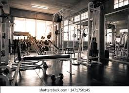
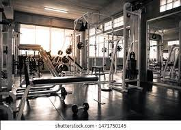

Services Page
Its ambition has been to offer 'fitness as a service' – an up-to-date fitness experience with the hardware components of fitness equipment, such as tubular frames (which can last for decades), serviced as necessary and only the software, such as treadmills and seats (which are in contact with users), replaced.

 
